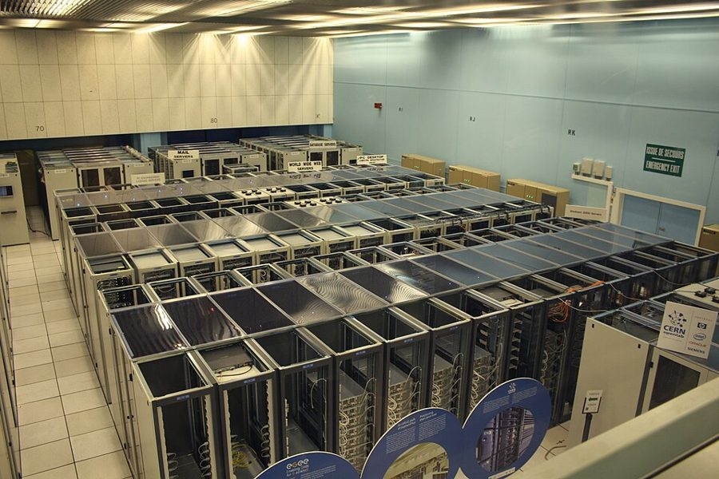

这一章在做什么
数据多到一台机器存不下、写不过来，就要把它切成分片，分给多台机器，每条记录只属于一个分片。这一章回答四个问题：按什么切（键的范围，还是键的哈希）；切得不匀、出现热点怎么办；加减机器时怎样少搬数据；请求怎么找到该去的机器。最后一个难点是二级索引：索引跟着数据走，读就要问遍所有分片；索引自己另外分片，写就要改好几处。作者的态度很明确：分片是重型方案，一台机器扛得住就别分。

欧洲核子研究中心（CERN）的机房，2010 年。一排排机柜里装着许多台机器，一份数据要怎样分到它们身上、加一台进来时又要挪动多少，就是这一章的题目。照片与本书无关。Hugovanmeijeren，CC BY-SA 3.0，维基共享资源 读之前：先预测
第 6 章把同一份数据复制到多台机器上，解决的是容错和读的扩展；这一章换一个方向，把数据切开，每台机器只管一部分，解决的是数据量和写入量。两者通常一起用，但这一章先把复制放到一边。后面几章都会回到这里：第 8 章的分布式事务，起因是一次写要跨好几个分片；第 10 章的共识，是协调服务记录「分片在哪台机器」的底子；第 11 章的批处理按键把数据分给各个任务，用的也是哈希分片。
一个集群有 4 台机器，用 hash(key) % 4 决定每个键放在哪台。现在加第 5 台，公式改成 hash(key) % 5。哈希值分布均匀，大约多少比例的键要换机器？
约 20%：新机器分走五分之一，只有这些键要搬
不用搬：已有的键留在原处，只有新写入的键用新公式
约 50%：大约一半的键会换地方
约 80%：绝大多数键都要换机器
说不准，取决于哈希函数好不好
外卖平台的订单表按订单号哈希分成 16 个分片。每个分片在「骑手 ID」上建了自己的二级索引，只索引本分片里的订单。客服要查「骑手 R17 今天送的所有订单」，这次查询要问几个分片？
1 个：二级索引会告诉数据库该去哪个分片
2 到 3 个：一个骑手一天几十单，大概落在少数几个分片
全部 16 个：每个分片都可能有他的订单，只能挨个问，再合并
1 个：同一个骑手的订单会被放进同一个分片
数据大到一台机器装不下时，怎样决定每条记录放在哪台机器上，才能同时做到：分得匀（没有哪台被压垮），查得快（知道去哪找），加减机器时搬得少？这三件事能不能兼得，代价落在哪里？
按键的范围分片和按键的哈希分片，各自放弃了什么？§3.1 §3.2
为什么预先切出比机器多得多的分片，就能让加机器时只搬一小部分数据？这个数一开始定错了怎么办？§3.2
哈希已经把键分匀了，为什么还会有热点？§3.3
二级索引为什么不能顺着主键的分片走？本地索引和全局索引，各把代价放在读上还是写上？§5.1 §5.2
这一章的骨架
全章按「切、搬、找」走：§1、§2 先问值不值得切，按租户切有什么好处；§3 是重心，讲按什么切、切不匀怎么办、加减机器时怎么搬；§4 讲请求怎么找到机器；§5 把二级索引放进来。容易乱的是 §3.2：一节里连讲四种做法（取模、固定分片数、哈希范围、一致性哈希），后一种在补前一种的短处。读的时候给每一种记下「加一台机器时搬的是什么」。
数据太多：切成分片，分给多台机器
按什么切 §3
分不匀怎么办
请求去哪台 §4
索引怎么切 §5
按键的范围 §3.1
按键的哈希 §3.2
加机器搬多少 §3.2
热点和热键 §3.3
自动还是人工 §3.4
三种路由方式
谁记分配表
本地：读问遍 §5.1
全局：写改几处 §5.2
先问：值得分吗 §1–§2
贯穿全章：分得匀 ⇄ 加机器搬得少 ⇄ 查得快
每一格都问：这样切，哪一类查询要问遍所有分片？
本站画的全章结构。第一列是重心，§3.2 的四种做法要能对上「加一台机器时搬的是什么」；最右一列是读后最容易混的两种索引。
边读边填：每行一个问题，读到答案就写一两句。只存在你这台设备的浏览器里，别人看不到。
读完了？对照我找到的
分片的代价：要选分区键，不知道分区键的查询得搜所有分片；方案难改；关系数据的二级索引和 join 难做；跨分片的写要分布式事务。
按租户分：单元化架构把一批租户的服务和存储打包，故障不出单元；前提是每个租户都小到一台机器放得下。
时间当键：新数据的键总是最大，全落在最后一段；键前面加上实体的 ID，写入就摊开了，但跨实体查一段时间要分别查。
固定分片数：分片数和键到分片的对应不变，只改分片放在哪台机器；定少了机器数受限，定错了要做代价很高的重新分片，把每个分片拆开重写，有的系统还不能边写边改。
拆热键：读要把拆出来的所有键都读一遍再合并；还要记住哪些键被拆了，以及怎样把普通键转成热键。
路由三问：谁决定分片放哪台（协调者怎么容错、怎么防脑裂）；路由的人怎么得知分配变了；搬分片的切换期间请求怎么办。协调服务（ZooKeeper、etcd）保存权威的分配表并通知路由层。
全局索引：一个条件只读一个索引分片；但取记录仍要访问多个分片，多条件要跨网络求交集，写一条记录可能要改好几个索引分片。
分节地图
全章约 7900 词（不算图注），是全书较短的一章，建议分三次读。第二次是重心，§3.2 一节就占了五分之一；第三次的两个话题彼此独立，可以分开读。
第一次坐下§0–§3.1 · 约 2700 词 · 为什么分、按租户分、按键的范围分
A distributed database typically distributes…约 500 词 开篇 复制和分片有什么不同、怎么组合；方框里是分片在各个系统里的不同叫法。 Pros and Cons of Sharding约 500 词 分片的利与弊 为什么要分片，为什么作者劝你能不分就不分。分区键在这里第一次出场。 Sharding for Multitenancy约 600 词 为多租户分片 每个客户一个分片的七条好处和三个难处。列表长，挑你关心的细读。 Sharding of Key-Value Data约 300 词 键值数据的分片 目标是分得匀、能再平衡；倾斜、热点、热键三个词在这里定义。 Sharding by Key Range约 800 词 按键的范围分片 边界怎么定、范围查询的好处、时间戳当键的热点，以及分片怎么拆。 第二次坐下§3.2–§3.4 · 约 2600 词 · 按哈希分、加机器怎么搬、热点和再平衡
Sharding by Hash of Key约 1700 词 按键的哈希分片 全章最长：取模、固定分片数、哈希范围、一致性哈希，一种补一种的短处。 Skewed Workloads and Relieving Hot Spots约 500 词 负载倾斜与缓解热点 哈希分匀了键，为什么还会有热点；拆热键的办法和它的代价。 Operations: Automatic Versus Manual Rebalancing约 400 词 运维：自动还是手动再平衡 自动再平衡省事，但和自动故障检测叠在一起时可能越帮越忙。 第三次坐下§4–§6 · 约 2600 词 · 请求路由和二级索引，加小结
Request Routing约 800 词 请求路由 三种把请求送到对的机器的办法，以及谁来维护「分片在哪」这张表。 Sharding and Secondary Indexes约 200 词 分片与二级索引 二级索引为什么和分片对不上。 Local Secondary Indexes约 500 词 本地二级索引 每个分片只管自己的记录：写简单，读要问遍所有分片。 Global Secondary Indexes约 500 词 全局二级索引 索引按被索引的值另外分片：查一个条件快，写和多条件查询变难。 Summary约 500 词 小结 全章回顾。先自己回忆一遍再读它。
1957 年 6 月，Grace Hopper（中间手拿稿纸的那位）在 UNIVAC 的控制台前。这一章开头的题词出自她 1962 年的一段话，大意是：要描述数据之间的关系，而不是一步步的过程。题词不算正文，分节地图从它后面的第一段算起。作者不详，CC BY 2.0，维基共享资源
先用中文过一遍
按键的范围切，还是按键的哈希切
分片要做到两件事：每条记录只属于一个分片；各个分片分到的数据和请求大致一样多。决定一条记录进哪个分片的那个键，叫分区键（partition key）。
第一种切法按键的范围：把键排好序，切成几段连续的区间，每个分片管一段。边界不必等距，要跟着数据的实际分布定，可以由管理员手工指定，也可以让数据库在分片太大时自动一分为二。好处是相邻的键在同一个分片里，按范围查只碰一两个分片。麻烦在写入的键总落在同一头的时候：拿下单时间做键，「现在」那一段所在的分片接下全部新写入，其余分片闲着。
第二种切法先对键算哈希，再按哈希值分。好的哈希函数把挨在一起的键打散到整个取值空间，写入就匀了；代价是键的顺序没了，按键查一个范围要问遍所有分片。折中的办法是键由两部分组成，只拿第一部分当分区键：同一个分区键下的记录还在一个分片里，按第二部分排好序，照样能做范围查询。
订单表，键是下单时间（今天是 10-15）
按键范围
分片 1
9 月及以前
分片 2
10-01 ~ 10-07
分片 3
10-08 ~ 10-14
分片 4
10-15 起
新写入
新订单的键都比已有的大，全进分片 4，分片 1–3 只剩读。
按日期查上周的订单：只读分片 3。
按哈希
新写入
分片 1
哈希值第 1 段
分片 2
哈希值第 2 段
分片 3
哈希值第 3 段
分片 4
哈希值第 4 段
相邻两个时间算出的哈希值毫不相干，写入摊到四段；
但按日期查上周的订单，四个分片都得问一遍。
本站画的示意图，日期是编的。两种切法都可以在某个分片太大时把它一分为二，分片个数跟着数据量增长。
键分匀了，负载不一定匀。一个特别热的键（一场热门演出开票时的库存）不管用哪种切法，都只落在一个分片上。这类倾斜要靠别的手段：把热键单独放一个分片，或者在应用里把一个键拆成很多个。
加一台机器，要搬多少数据
最直接的想法是 hash(key) % N，N 是机器数。问题出在 N 变的时候：除数一换，几乎每个键算出来的余数都变了。从 4 台加到 5 台，只有哈希值除以 20 余 0 到 3 的键留在原地，其余全要搬家，而新机器其实只需要接手五分之一。
解决办法是把一层映射拆成两层：键 → 分片，分片 → 机器。一开始就切出比机器多得多的分片，比如 240 个分片放在 6 台机器上，每台 40 个。键进哪个分片由 hash % 240 决定，永远不变；加机器时，只是把一些分片整个搬到新机器，再改一下分配表。代价是分片数要一开始猜对：机器数不能超过分片数；数据涨了几十倍，每个分片也跟着胖了几十倍。
另一条路是让分片数跟着数据走：每个分片管一段连续的哈希值，太大了就拆。有的系统再进一步，让每台机器在哈希值空间里取好几个随机边界，新机器加入时从别人的范围里各切走一小段。这一类「分片数变了也只搬最少的键」的算法，统称一致性哈希（consistent hashing）；这里的「一致」和副本一致性没有关系。
hash % 机器数：从 4 台加到 5 台
哈希值
原 %4
新 %5
0 1 2 3 4 5 6 7 8 9 10 11 12 13 14 15 16 17 18 19
0 1 2 3 0 1 2 3 0 1 2 3 0 1 2 3 0 1 2 3
0 1 2 3 4 0 1 2 3 4 0 1 2 3 4 0 1 2 3 4
绿色不动，红色换机器：20 个里 16 个要搬。搬去新机器 4 的只有 4 个，另外 12 个在老机器之间白搬。
固定 20 个分片：键 → 分片不变，只改分片 → 机器
分片
原机器
新机器
0 1 2 3 4 5 6 7 8 9 10 11 12 13 14 15 16 17 18 19
0 1 2 3 0 1 2 3 0 1 2 3 0 1 2 3 0 1 2 3
0 1 2 3 0 1 2 3 0 1 2 3 0 1 2 3 4 4 4 4
4 台老机器各让出 1 个分片，整个搬到机器 4。搬走的正好是新机器该分到的那五分之一。
本站画的示意图。哈希值只看它除以 20 的余数就够了：% 4 和 % 5 的结果都由这个余数决定。下一节的模拟器用 6000 个键把三种分法各跑一遍。
请求怎么找到那台机器
知道了键属于哪个分片、分片在哪台机器上，请求还得真的送过去。有三个地方可以做这件事：让任意一台机器接请求，不归它管就转发；在前面放一层专门的路由；让客户端自己记着分配表，直接连对的机器。不管放在哪，都绕不开同一个难题：分配表会变（加机器、搬分片、机器宕掉），谁来决定它、改了以后怎么通知所有做路由的人、搬到一半时发往旧机器的请求怎么办。很多系统把这张表交给一个靠共识算法保证不出错的协调服务；也有系统让节点之间互相传话，把变化慢慢散布出去，代价是可能出现两边对同一个分片看法不一的情况。
二级索引：跟着数据分，还是自己另外分
订单按订单号分片，按订单号查很快：算一下就知道去哪个分片。可是「查杭州的所有订单」用的是城市，城市和订单号没有关系，一个城市的订单散在所有分片里。
一种做法是每个分片只给自己的订单建索引（本地索引）。写一条订单只动一个分片；查杭州就要把查询发给所有分片，再把结果合并，分片越多，一次查询要等的分片越多。另一种做法是把索引本身按城市分片（全局索引）：杭州的条目全在同一个索引分片上，查一个条件只问一处；但写一条订单要同时改数据所在的分片和索引所在的分片，两处怎么保持一致就成了问题。
本地索引：每个分片只索引自己的订单
查 城市=杭州
数据分片 0
订单 3107 杭州
订单 3512 苏州
订单 4420 杭州
索引 杭州→3107, 4420
苏州→3512
数据分片 1
订单 3388 宁波
订单 4091 杭州
订单 4876 苏州
索引 杭州→4091
宁波→3388 苏州→4876
写一条订单只动它所在的分片；查杭州要问遍所有分片，再把结果合并。
全局索引：索引本身按城市另外分片
数据分片 0
订单 3107 杭州
订单 3512 苏州
订单 4420 杭州
数据分片 1
订单 3388 宁波
订单 4091 杭州
订单 4876 苏州
索引分片 甲
杭州→3107, 4091, 4420
索引分片 乙
苏州→3512, 4876 宁波→3388
查 城市=杭州
查一个城市只问一个索引分片，取订单再去各数据分片；写 4091 要改数据分片 1 和索引分片甲两处。
本站画的示意图，订单号和城市是编的。虚线是拿到订单号以后去取整条订单。
这一章点名的系统
Vitess MySQL 的分片层 书里拿它当手工指定键范围边界的例子。
HBase Bigtable 的开源对应物 按键范围自动拆分片；书里说它默认分片到 10 GB 就拆。
MongoDB 文档数据库 键范围和哈希范围两种分法都支持；路由靠它自己的 config server 和 mongos 进程。
Citus PostgreSQL 的分片层 书里列为使用固定数量分片的系统之一。
Cassandra / ScyllaDB 无主数据库 哈希值空间切成随机边界的多段，书里说默认每台机器 16 段 / 256 段。
DynamoDB 云上的键值数据库 按哈希范围分片；本地、全局二级索引都有，全局索引是异步更新的。
ZooKeeper / etcd 协调服务 用共识算法维护「哪个分片在哪台机器」的权威记录，变了就通知订阅者。
Riak 无主数据库 不用协调服务，节点之间用 gossip 协议传播集群状态。
CockroachDB / TiDB / YugabyteDB 分布式 SQL 数据库 书里列的使用全局二级索引的系统。
英文 中文 一句话 shard / partition 分片（分区） 数据切出来的一块，每条记录只属于一个分片（§0）。 partition key 分区键 决定一条记录进哪个分片的那个键或那一列（§1）。 multitenancy 多租户 一套系统服务很多客户，每个客户的数据自成一体（§2）。 cell-based architecture 单元化架构 把一批租户的服务和存储打包成能独立运行的单元，故障不出单元（§2）。 rebalancing 再平衡 加减机器后，把数据和负载重新摊匀（§3）。 skew / hot spot 倾斜 / 热点 有的分片数据或请求远多于别的分片；负载特别高的那个叫热点（§3）。 hot key 热键 单个请求特别多的键（§3）。 key-range sharding 按键范围分片 每个分片管一段连续的键，分片里的键有序（§3.1）。 pre-splitting 预拆分 空库时就按预估的键分布先切好分片（§3.1）。 hash sharding 按哈希分片 先对键算哈希，再按哈希值分；可以按取模、按哈希值的范围等方式分（§3.2）。 consistent hashing 一致性哈希 分片数变化时尽量少搬键的映射算法；和副本一致性无关（§3.2）。 request routing 请求路由 把对某个键的读写送到负责它的机器（§4）。 coordination service 协调服务 ZooKeeper、etcd 一类，用共识算法保存分片分配表（§4）。 local secondary index 本地二级索引 每个分片只索引自己的记录；又叫按文档分区的索引（§5.1）。 global secondary index 全局二级索引 索引按被索引的值另外分片；又叫按词分区的索引（§5.2）。
动手：模拟器
先猜：6000 个键、4 台机器，用 hash % 机器数，加到第 5 台要搬多少个键？换成固定 24 个分片呢？再想想：按范围分片、每台机器只取 1 段边界时，新机器能分到公平的一份吗？猜好了再点。
模拟器 加一台机器要搬多少数据 6000 个键，一开始 4 台机器，每台一行，条的长度是它存的键数。点「加一台机器」或「减一台机器」：绿色是这一步非搬不可、搬进来的键（搬去新机器，或从撤掉的机器搬走），红色是本来可以不动、却换了机器的键。按键范围和按哈希值范围分片，加机器时都是从现有的范围里切一段给新机器，搬的量一样；这里用哈希值的范围演示。
分法 hash % 机器数 固定数量的分片 按范围分片（随机边界）
加一台机器
减一台机器
重置
固定分片数 8 24 48
每台机器的段数 1 16 256
从「加一台机器」开始：先用 hash % 机器数，从 4 台加到 5 台。
选「hash % 机器数」，从 4 台加到 5 台，对比「这次搬了几个键」和「理想最少要搬」；再加到 6 台。然后减回 5 台：白搬的又有多少？
换成「固定数量的分片」，24 个分片，从 4 台加到 5 台：搬走的是哪几个分片？新机器分到的为什么比「理想」略少？改成 8 个分片，一路加到 9 台会怎样？
换成「按范围分片」，每台 1 段，连加几台，看新机器各分到多少、「最多 / 最少一台」差多少；改成每台 16 段、256 段再试（书里说的两个默认值）。为什么段多了就匀了？
词与短语
词条按在书里出现的顺序排，按节分组；读一节之前先把这一节的过一遍，读的时候就不用停。斜体小字是原句里连续的几个词，在电子书里搜它就能找到那一句。标着「每个字都认识」的，是字面意思会把你带偏的。行话（rebalancing、hot spot 这类）不在这里，在上面的术语表里。
§0 A distributed database typically distributes…
in effect
… In effect, each shard is a …
实际上、效果上等于
不是「生效」。说的是：虽然名义上是一个数据库，每个分片用起来就像一个独立的小数据库。
carried over to
… later it was carried over to databases.
（说法）沿用到……
carry over 是把一个领域的东西原样带到另一个领域，不是「搬运」。
lost to history
… details of which are lost to history.
已经无从查考
字面是「丢给了历史」。作者在暗示这个缩写的来历已经无从核实。
§1 Pros and Cons of Sharding
heavyweight solution
… sharding is a heavyweight solution that …
重型方案（代价大、牵连多）
stick with
… and stick with a single-shard database.
继续用、守着不换
stick with 是「坚持用原来那个」，不是「粘住」。
banks of memory
… some banks of memory are closer to …
（一组组的）内存
bank 在硬件里是「一组、一排」，memory bank 是一组内存，和银行无关。
§2 Sharding for Multitenancy
sign-ups
… one business’s newsletter sign-ups, delivery data, …
（订阅邮件的）登记名单
名词，「报名、注册的人或记录」，不是「签名」。
touch on
… which we previously touched on in …
简单提到过
touch on 是「略谈」，和 touch 的「触碰」差得远。
roll out
… can be rolled out gradually, one tenant …
（逐步）上线、推开
§3 Sharding of Key-Value Data
a fair share
… If every node takes a fair share, …
应得的那一份（大致相等的一份）
fair 在这里是「合理均分」，不是「公平正义」。
disproportionately
… A shard with disproportionately high load …
不成比例地（高得离谱）
amenable to
… needs to be amenable to rebalancing …
便于、经得起（某种处理）
amenable 常被记成「顺从的」；技术文里是「适合做……」，如 amenable to caching。
§3.1 Sharding by Key Range
sit idle
… while others sit idle.
闲着没事干
sit 不是「坐」，是「处于某种状态」。§3.3 还会出现一次。
exacerbate
… splitting can exacerbate that load, …
加重、使恶化
§3.2 Sharding by Hash of Key
from the outset
… into 1,000 shards from the outset, …
从一开始
divisible by many factors
… one that is divisible by many factors, …
约数很多（能被很多数整除）
factor 在这里是数学上的「因数」，不是「因素」。
account for
… You can even account for mismatched hardware …
照顾到、把……考虑进去
不是「解释」也不是「占比」：配置不一样的机器，也能按能力多分或少分。
subject to
… subject to the limitation that you …
受……限制，前提是……
不是「主题」。subject to 后面接的是条件或约束。
just right
… is “just right,” neither too big …
刚刚好
加了引号，暗用金发姑娘的童话：粥不烫不凉、床不软不硬才「刚刚好」。英文里常把这种「不多不少」的区间叫 Goldilocks zone。
aforementioned
… The aforementioned key-range sharding scheme has …
前面说过的
even out
… those imbalances tend to even out.
（差异）相互抵消、拉平
even 作动词，「变平」。每台机器有好几段，有的大有的小，加起来就差不多了。
§3.3 Skewed Workloads and Relieving Hot Spots
a storm of activity
… may cause a storm of activity.
一阵密集的访问
storm 比喻短时间里突然涌来的大量请求。
bookkeeping
… This technique also requires additional bookkeeping:
额外的登记维护工作
本义是记账。技术文里指为了让机制运转而要额外记下、维护的状态。
compounded by
… The problem is further compounded by changes …
因……而更加复杂、更糟
compound 作动词是「使加重」，不是「复合」。
go viral
… post that has gone viral may …
（在网上）疯传、爆红
§3.4 Operations: Automatic Versus Manual Rebalancing
gloss over
… We have glossed over one important question …
一笔带过、没细说
作者在自承前面略过了一个问题，接下来要补上。
middle ground
… There is also a middle ground …
折中的做法
be promoted as
… are promoted as being able to …
被宣传为……
promote 是「推销、宣传」，不是「晋升」。口气带点保留：这是厂商的说法。
a human in the loop
… to have a human in the loop …
让人参与把关
loop 指自动化的流程，human in the loop 是关键步骤要人确认。
§4 Request Routing
cutover
… there is a cutover period during which …
切换（从旧的转到新的那一下）
in flight
… may still be in flight.
（请求）已经发出、还没处理完
字面是「在飞行中」。网络里常说 in-flight requests。
§5 Sharding and Secondary Indexes
hogwash
… containing the word hogwash, find all …
胡说八道
作者随手挑的一个怪词当搜索例子。
raison d’être
… the raison d’être of full-text search …
存在的理由
法语借词：全文检索引擎生来就是为了这类索引。
map neatly to
… they don’t map neatly to shards.
和……一一对得上
map 作动词是「对应」，neatly 是「整整齐齐」。
§5.1 Local Secondary Indexes
be tempted to
… you might be tempted to implement …
忍不住想（去做某事）
作者的提醒语气：这么做看着省事，后面有坑。
go down this route
… If you go down this route, …
走这条路、采用这个做法
out of sync
… cause the data to go out of sync
不同步、对不上
prone to
… it is prone to tail latency amplification
容易出现（坏事）
§5.2 Global Secondary Indexes
defeat the purpose
… defeat the purpose of sharding.
违背初衷、白做了
defeat 不是「打败」：索引全放一台机器，又成了分片想消除的那个瓶颈。
§6 Summary
by design
… By design, every shard operates mostly …
有意这样设计的
不是「按照设计图」。强调分片各自独立是故意的，扩展性正来自这里。
到这里先停下，去读原书 下面是读完再看的：你的预测对不对、几道换成你来选的判断题、值得细读的句子和理解检查。先看了，读书时就只是在找答案。
读完：回到你的预测
按 §3.2 的道理算，答案是第四项。书里只说「大部分键都要搬」，具体比例可以自己算：一个键留在原地，要求它的哈希值除以 4 和除以 5 的余数相同，也就是除以 20 的余数落在 0 到 3，哈希均匀时这只占五分之一，所以约五分之四的键要换机器。新机器其实只需要接手五分之一，多出来的搬动全是老机器之间互相倒腾。「已有的键不用搬」也不成立：读的时候用的是新公式，旧键不搬就找不到了。想一想：如果从 4 台直接加到 8 台，要搬的比例是多少？这一次有没有白搬的键？
答案是第三项（§5.1）。本地索引只知道本分片里有哪些订单，而订单是按订单号分的，同一个骑手的订单散在所有分片里，所以要把查询发给全部 16 个分片再合并结果。书里说这种读法代价高，还容易放大尾延迟（第 2 章讲过：等的分片越多，碰上一个慢的概率越大）。只要一部分结果时可以只问一个分片，但「今天的全部订单」不行。想一想：如果骑手 ID 上建的是按骑手 ID 分片的全局索引，这次查询要问几个分片？写一条新订单又要改几处？
判断题：换成你来选
场景都是本站编的。先选，再看解释；解释里写了对应的节号，拿不准就回原书看那一节。
写入为什么全压在一台机器上，该怎么改？§3.1
场景：一家网约车公司把行程轨迹点存进按键范围分片的数据库，键是上报时间。司机端每 3 秒报一次位置，监控显示永远只有一台机器的写入打满，其余几台很闲。最常见的查询是「某一趟行程的全部轨迹点」。
把最热的那个分片拆成两半 键改成「行程 ID + 上报时间」 再加两台机器 改成对整个键算哈希再分片
按时间排序时，新数据的键总比已有的大，全落在最后一段；拆开以后新写入照样只进后一半，加机器也一样。把行程 ID 放在前面，同时进行中的大量行程把写入摊到各个分片，同一趟行程的点仍然按时间挨在一起，查一趟行程还是一次范围扫描。对整个键算哈希也能摊匀写入，但一趟行程的点会被打散到所有分片，最常见的查询反而变慢了。
建库时，分片数定多少？§3.2
场景：一个团队要上线一个用固定分片数的分布式数据库。现在 3 台机器，预计两三年里最多涨到 40 台左右，数据量会涨几十倍。分片数建库时就要定，以后改要重新分片，很难不停机。
3 个，一台一个，以后再说 40 个，正好够将来的最大规模 几百个，比如 480：约数多，40 台时每台正好 12 个 一百万个，越细越灵活
机器数不能超过分片数，3 个直接堵死了扩容。40 个虽然够数，但 3 台时只能分成 14、13、13，到 40 台时每台只有一个分片，再要调整就无处可调。480 这样约数多的数，在 3、4、5、6、8、10、12、…、40 台时都能分得匀，每个分片也不会太小。一百万个分片每个都太小，书里说分片太小，管理开销就太大。
开票那一分钟，怎么扛住这一场的库存扣减？§3.3
场景：一个票务系统按场次 ID 哈希分片。一场热门演唱会开票的那一分钟，这一场的库存计数每秒被扣几万次，它所在的那台机器 CPU 打满，其余机器很闲。
把这一场的库存拆成 100 份，键后面加两位随机数，每次扣减随机挑一份 再加几台机器 把哈希分片换成一致性哈希 给这台机器加几个只读副本
一个键不管用哪种分片方案都只落在一个分片上，加机器、换哈希算法都改变不了这一点；只读副本分担的是读，扣库存是写。把一个热键拆成 100 个键，写就分散到不同分片。代价是要知道「还剩多少」得把 100 份加起来，某一份扣完了还要去别的份里找；系统也要记住哪些键被拆过，开票的热度过去后再合回来。
这场连锁故障，最该改哪一项？§3.4
场景：一个集群开着「节点失联就自动把它的分片迁走」。某天一台机器因为一次很长的垃圾回收停顿卡了二十秒，系统判定它挂了，开始往其他机器迁分片。迁移的流量让另外两台也变慢，接着它们也被判定失联……
把失联判定的超时从 10 秒缩短到 3 秒，更快发现问题 换成固定分片数的方案，搬分片更便宜 把机房网络带宽加大一倍 改成由系统给出迁移方案，人确认后再执行
这正是书里说的自动再平衡和自动故障检测叠在一起的危险：慢不等于死，误判之后搬数据又给别的机器加了负载，一台拖垮一台。缩短超时只会误判更多；固定分片数让搬的单位更整齐，但要搬的数据一点没少；带宽更大能缓一缓，判断错误的根子还在。书里提到的折中是让人参与再平衡，比如系统生成建议的分配、管理员确认后才生效。
按手机号查运单太慢，怎么改？§5.1 §5.2
场景：一个物流平台的运单表按运单号分成 64 个分片，每个分片在「收件人手机号」上有自己的本地索引。客服每秒按手机号查运单几千次，一个手机号通常只对应几张单；运单每秒新增几百条。现在每个分片的 CPU 都被这类查询占满。
保持本地索引，把分片加到 128 个 建一个按手机号分片的全局索引，接受新运单在索引里稍晚出现 把所有分片的索引汇总到一台专门的索引机器上 给每个分片加只读副本，查询轮流发给副本
本地索引的每次查询都要发给全部 64 个分片，分片加倍只会让每次查询多问一倍的分片，总吞吐上不去。全局索引按手机号分片，一次查询只问一个索引分片，几张运单也只碰几个数据分片；读远多于写、又只有一个条件，正是全局索引合适的情况。代价是每次写要多改一个索引分片，像 DynamoDB 那样异步更新时，刚建的运单可能晚一点才查得到。索引全放一台机器会成为新的瓶颈；加副本能分担一些，但每次查询仍要问遍所有分片。
和本站其他书对照
RAID-0 的条带化 OSTEP 第 38 章 那一章的 RAID-0 用的就是 §3.2 里那个取模：逻辑块 A 放在第 A % N 块盘上。在那里盘数是固定的，取模又简单又均匀；这一章的问题恰恰是 N 会变。读完 §3.2 回头看那个公式，想想给阵列加一块盘时，按这个公式会有多少块换地方。
去那一页 →
值得停下来的句子
sharding is a heavyweight solution that is mostly relevant at large scale.— §1。本站译：分片是一种重型方案，大多只在规模很大时才用得上。
这句话给全章定了调。后面讲的每一种切法、每一种搬法、每一种索引，都是在为分片带来的复杂付账：要选分区键，跨分片的写要分布式事务，二级索引要么读贵、要么写贵。作者紧接着提醒，如今一台机器能做的事很多。读后面的每一节时，可以回来问一句：这份复杂，是为多大的规模付的？
adding more shards lets you store more data, but it doesn’t increase your query throughput if every shard has to process every query anyway.— §5.1。本站译：多加分片能多存数据，但如果每个分片反正都要处理每一个查询，查询吞吐并不会提高。
分片能扩展的，只是「一个请求只碰一个分片」的那部分负载。一类查询如果要扇出到所有分片，它就没有被分摊，只是被重复了 N 遍。所以选分区键，其实是在决定哪些查询能随机器数扩展、哪些不能；全局索引就是为某一类查询另选一个分区键。
检查一下理解
1.（§1）读的量太大和写的量太大，书里分别建议怎么扩展？ 读太多不一定要分片，用复制把读分给多个从库就行（第 6 章的读扩展）。数据量或写入量超出一台机器时，才需要分片。
2.（§1）为什么有的系统在一台机器上也分片？ 每个 CPU 核跑一个单线程进程，各管一个分片，这样能用满多核，也能照顾到 NUMA 架构里内存离哪个 CPU 近。书里举的是 Redis、VoltDB、FoundationDB。
3.（§2）按租户分片，什么情况下这条路走不通？ 某个租户大到一台机器放不下，就得在它内部再分片；租户又多又小时，一个租户一个分片开销太大，合在一起又要处理租户长大后的迁移；需要跨租户关联数据的功能会变成跨分片的 join。
4.（§3.1）按键范围分片时，边界为什么不能简单地按字母平均切？ 数据本身分布不均，平均切会让一些分片比别的大得多。边界要跟着数据定：管理员手工定，或者分片长到一定大小时自动拆开。
5.（§3.2）为什么不能直接用编程语言自带的对象哈希函数来分片？ 有些语言（书里举了 Java 和 Ruby）里，同一个键在不同进程中算出的哈希值可能不同。分片要求每个节点、每个客户端对同一个键算出同一个结果。
6.（§3.2）固定分片数的方案里，加一台机器时什么变、什么不变？ 分片的个数和键到分片的对应都不变，变的只是分片放在哪台机器，搬的是整个分片。搬的过程要花时间，期间读写仍按旧的分配进行。
7.（§3.3）给热键加上随机后缀以后，读为什么没有变轻松？ 写被分散到了 100 个键上，但读要把这 100 个键都读一遍再合并，每个子键上的读量并没有减少。而且只该对少数热键这么做，所以还要另外记住哪些键被拆了。
8.（§5.2）全局索引查一个条件只要读一个索引分片，为什么取回整条记录时还要访问多个分片？ 索引分片里存的只是记录 ID 的列表；记录本身按主键分片，这些 ID 散在各个数据分片上，要一个个去取。
用一句话说这一章（写给一个没读过的朋友）：
精彩回顾
一句话： 分片要在「分得匀、搬得少、查得快」之间取舍，而一台机器扛得住时，最好的分片方案是不分。
能不分就不分 分片是重型方案：要选分区键，跨分片的写要分布式事务，二级索引变难。如今一台机器能扛的量很大。
§1 时间戳当键 按范围分片时，新数据的键总是最大，全挤进最后一个分片。在前面加上实体 ID，写入就摊开了。
§3.1 取模的陷阱 hash % N 从 4 台变 5 台，约五分之四的键换机器，而新机器只需要五分之一。除数一变，余数全乱。
§3.2 两层映射 键 → 分片永远不变，分片 → 机器可以改。加机器只搬整个分片；代价是分片数要一开始定好。
§3.2 一个键拆成一百个 热键再怎么换分片方案都只在一个分片上。加两位随机数把写分散，读就要把一百份合起来。
§3.3 慢不等于死 自动再平衡遇上自动故障检测：把慢节点当死节点，搬数据又压垮别的节点，一路连锁下去。
§3.4 索引跟谁走 本地索引写一处、读要问遍所有分片；全局索引读一处、写要改好几处。
§5